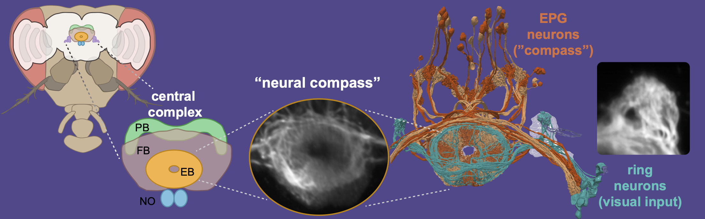

Research
We study behavioural strategies and neural mechanisms for robust navigation.
What do we aim to understand? What experimental approaches do we use to get there?What do we aim to understand?
How do animals know where they are?
Navigating through diverse and dynamic environments is a fundamental and highly complex problem. To achieve robust
navigation and quick adaptation to new situations, our brains generate abstract internal representations of relevant
information from the environment, which in turn are used to guide actions. A spatial representation that has been
identified in a range of species is a head direction estimate or neural compass.

We study how external sensory stimuli are processed and organized in the brain to update this compass. We also investigate how circuits can be adapted to environmental conditions through structural plasticity. Ultimately, we aim to uncover circuit mechanisms ensuring the stability of the compass system in dynamic environments.
How do animals choose appropriate strategies to get where they need to go?
 How the aforementioned neural compass guides behaviour and how animals adapt their navigational strategies when
their internal compass system fails is still poorly understood. We study which sensory environments drive different
navigational strategies.
How the aforementioned neural compass guides behaviour and how animals adapt their navigational strategies when
their internal compass system fails is still poorly understood. We study which sensory environments drive different
navigational strategies.
Current projects
- Linking the functional organisation of sensory information in the central brain to “compass” function in dynamic, multimodal environments
- Uncovering rules for multimodal integration and cue preference for a robust compass estimate.
- Characterization of sensory signals driving choice of different navigational strategies.
- Adaptation of circuits through structural plasticity and implications for orientation.
We study two organisms that each bring unique experimental advantages
In fruit flies (Drosophila melanogaster) we can use genetic tools and established calcium imaging techniques to monitor and perturb defined populations of neurons. Desert ants (Cataglyphis nodus) have exquisite and robust navigation behaviour, which has been characterised in a defined ethological context. We compare these models across multiple axes: anatomical structure of circuits, behaviour and eventually physiology.
Methodology and technology development
To study structure and function of neural circuits and relate neural circuits to behavior, we use use a wide range of cutting-edge techniques.
...to simulate natural environments in the lab. More here!
Circuit reconstruction
...using volumetric electron microscopy and light-level techniques.
Behavior experiments
...using VR in freely moving and (head-)fixed animals. More here!
Two-photon imaging in behaving animals
...to monitor neural activity with single-cell resolution in behaving animals deep in the brain.
Connectome analysis
...to extract insights and generate testable hypotheses.
Modelling of neural circuits
...to quantitatively test hypotheses about circuit function.
Our funding
Our research is currently funded through the the Emmy Noether Program of the German Research Council (DFG).